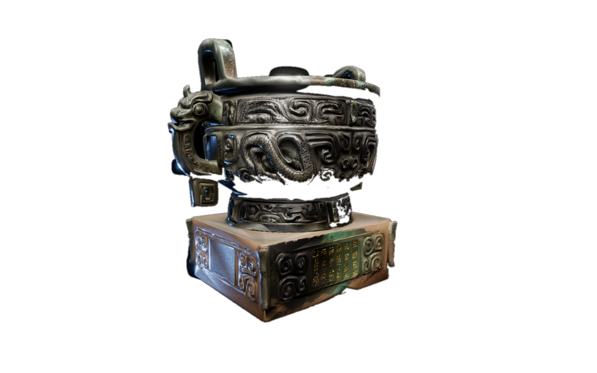
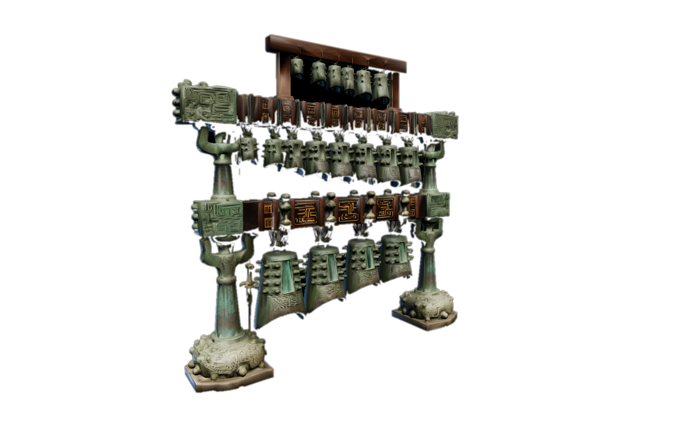
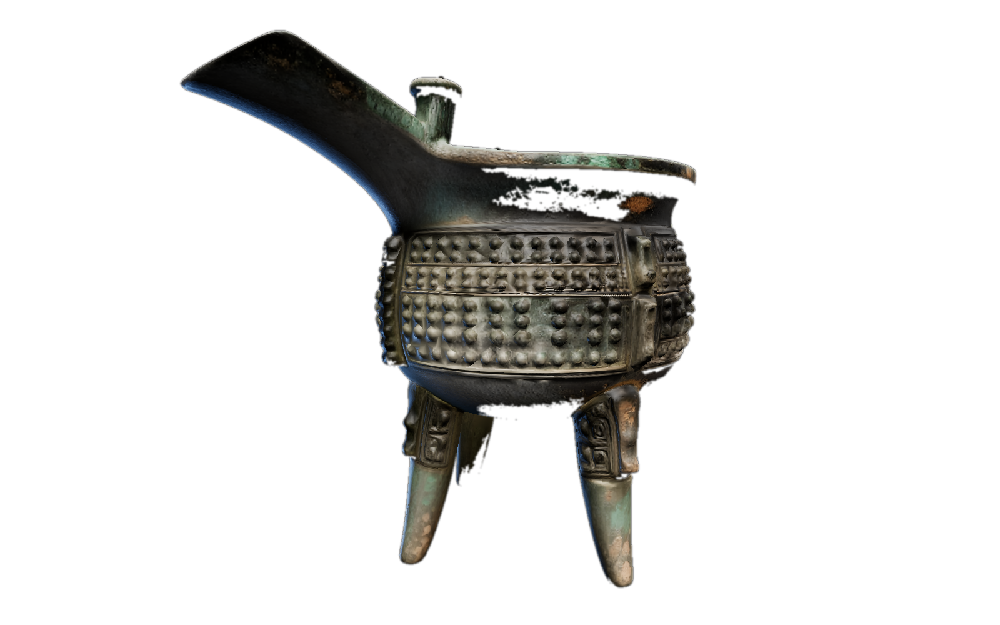
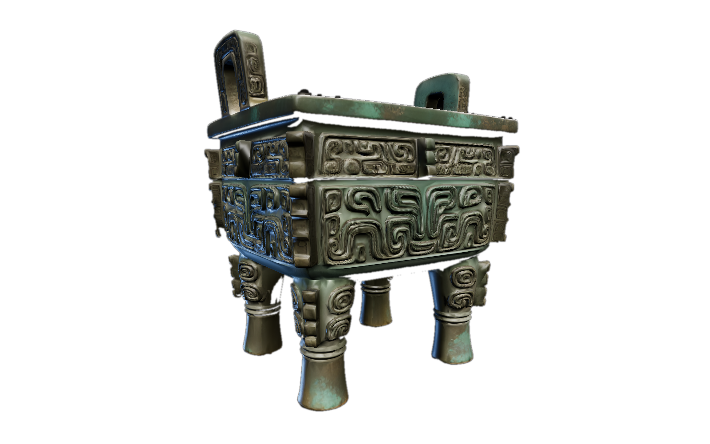
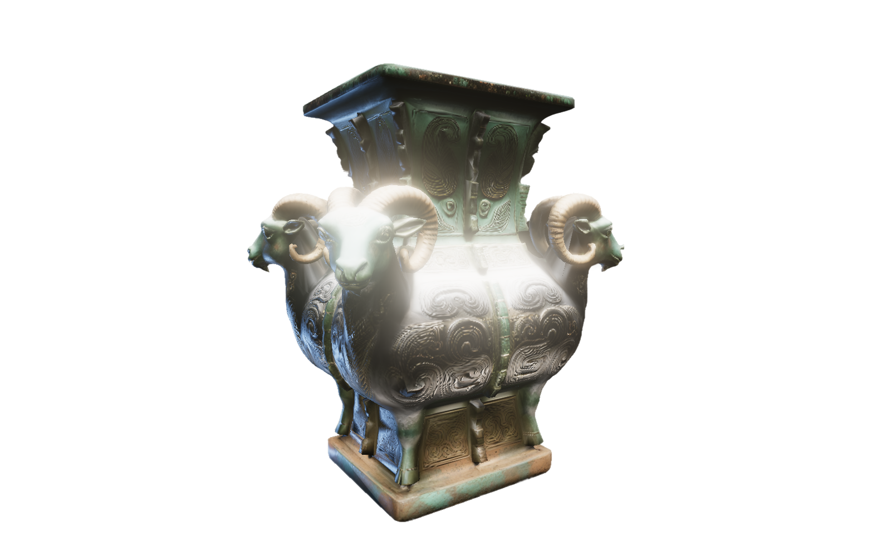

Bronze Heritage Gesture Interaction
Five Chinese bronze treasures, rebuilt as clouds of touchable particles. Wave, pinch and swipe your way through three thousand years — no headset, no controller, just your hands.
Ancient bronze, played with bare hands.
Bronze Ware Interaction is a browser-based digital heritage experiment. Five famous Chinese bronze vessels were rebuilt as clouds of GPU particles — reach in with your bare hands, and the bronze melts, bursts apart and pulls itself back together.
Under the hood: Three.js + GPU particles + MediaPipe hand tracking — no markers, no gloves, all in the browser.
Tap GESTURE in the demo and allow camera access — the AI needs to see your hands. Video stays local.
Every gesture has a mouse equivalent — but hand tracking is the star.
The real bronzes sleep in climate-controlled vaults — behind glass, under low light: preserved, and untouchable. Every human touch leaves oils and salts that corrode three millennia of patina.
Protection has always meant distance: the more precious the vessel, the further hands must stay. Particles break the dilemma — bronze can be melted, scattered and held, yet never worn, never harmed.
A gesture is not a button press. To wave, pinch and cradle is to lend the bronze your body — its weight, rhythm, hesitation. The interface dissolves; what remains is an encounter.
No headset, no install, no ticket. A web page is the most democratic gallery hall — anyone with a browser and a camera can stand before three thousand years.
Beneath the play sits the question I carry into doctoral work: how embodied interaction turns looking into encountering. Eyes observe. Hands remember.










Try it right here.
The live prototype in a small window — go fullscreen anytime, it keeps running.
Before you play: the 3D models take about 1–2 minutes to load on your first visit — give it a moment. To try gesture control, tap GESTURE inside the demo and allow camera access when your browser asks.
Gesture mode needs a camera and a desktop browser. On phones or without a camera, the mouse controls above work just fine.
Watch it in action.
A recorded walkthrough of the full interaction — gestures, particle bursts and all five bronzes.
Source: Bronze-Ware-Interaction repository · public/videos/bronze-ware-interaction-demo.mp4